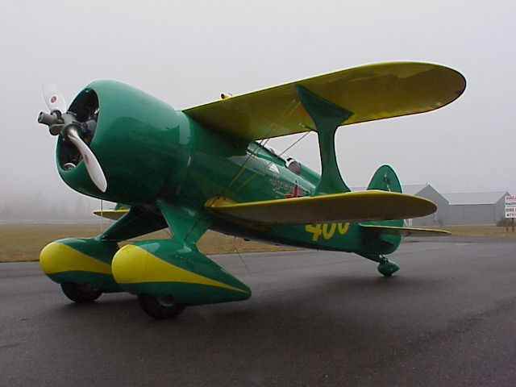
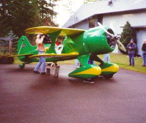
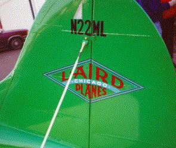
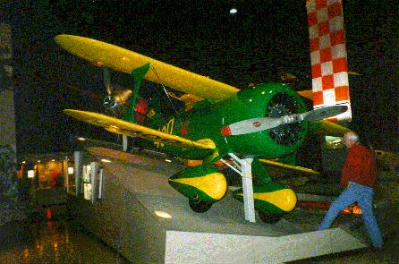
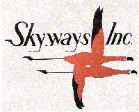
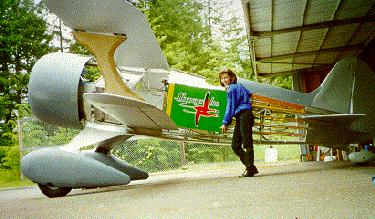

On December 6, with no less drama than likely accompanied the original's first
flight some 68 years ago, the second flying Super Solution launched from Jim Moss' small
turf strip near Puyallup, WA.

We think Matty is smiling from above. His actual signature rode on the airplane,
along with the original Super Solution registration.

Please see the "First Flight" link below for pictures. For a nice story and professional presentation with VIDEOS, please drop into Wayne Sager's page on our Laird. Thanks, Wayne, nice job!
Thanks to YOUR careful flying for the past several years, most of our work has been dedicated to scheduled training and currency flights, and chasing those dang stray ELT's, instead of search. (GUARD 121.5 WHEN YOU FLY!) This has left a little time for some non-flying work. One project is shown below.
The Laird Super Solution was a 1931 airplane from the Golden Age of air
racing. It was a transition airplane from the wood and fabric "Jenny" to
more modern construction techniques. There was only
one flying version built, but it was very successful in 1931. Jimmy
Doolittle won the Bendix Trophy Race and set a transcontinental speed record
from Burbank to New Jersey. He also raced in the Thompson trophy race
against the Gee Bee, but retired due to an overheated engine (this was only
3 days after the Bendix race, on the same engine!)
Below is a picture from the EAA museum of the non-flying Super Solution
replica.

On the side of the airplane are a couple of flamingos which were the logo
of a sponsoring FBO. Art for the decal has been created by Judy Moss who is
putting up with Jim in all this. A tribute to her is the display of her art below:


NEWS FLASH! IT RUNS! We completed the engine green run 11/03. As with all radials, the nice, fresh R-985 sounded like a million bucks. Stay close for first flight news.
An amazing fact is that the only flying airplane was built by 15 men who lived at the Laird Airplane Factory for 40 days! Shortly after completion, Doolittle won the Bendix Trophy race!!
WE MADE IT! A last minute push (there was no fabric on the fuselage, or paint on anything on July 16). Laird Super Solution #.003 was trailered to AirVenture 2000 at Oshkosh and assembled on July 26 as shown below.
Jim Moss (not yet a WASAR member..) of Puyallup, WA, is undertaking the construction of the flying replica shown in the links below, with a little help from his friends.
Comments are welcome to: